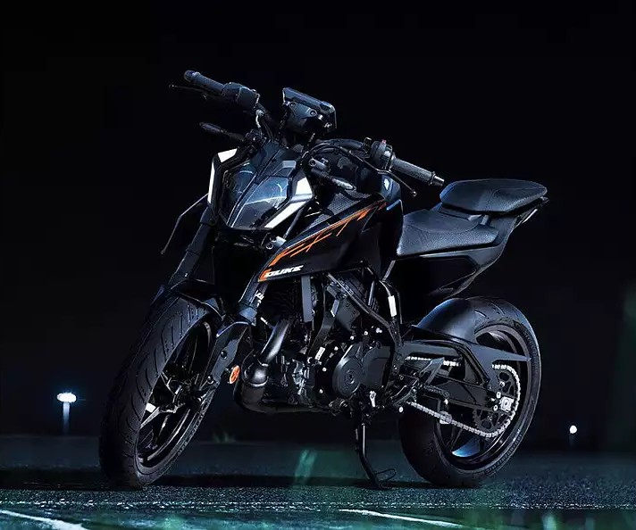
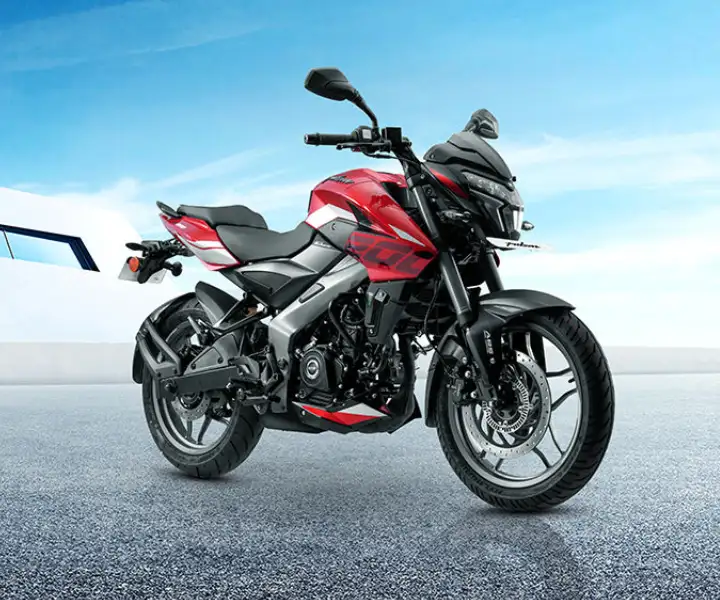
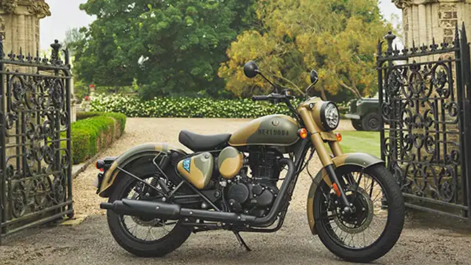
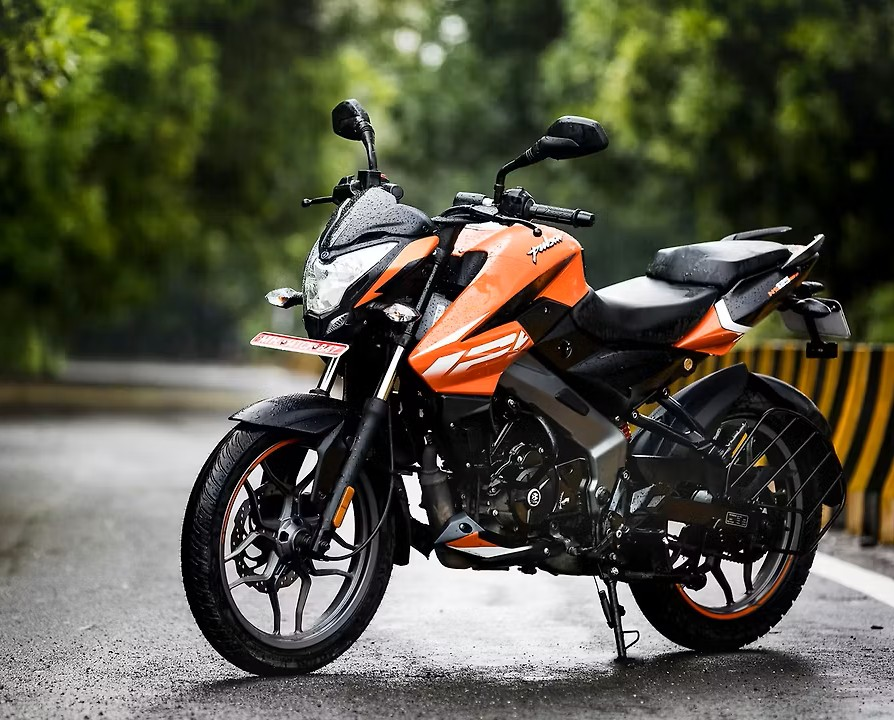

Best Bikes
Under 300 cc segment
NOTE: its not in order
KTM Duke 250

- Good top end performance
- Good looks
- bike is a beast, MUST BE IN THE RIGHT HANDS
- Engine specifications:
- Displacement: 249.07cc
- Cylinder Configuration: Single-cylinder, 4-stroke
- Valves: 4 valves (2 intake, 2 exhaust)
- Camshaft Type: DOHC (Dual Overhead Camshaft)
- Cooling Type: Liquid-cooled
- Transmission: 6-speed gearbox
- Compression Ratio: 12.6:1
- Bore x Stroke: 72mm x 61.1mm
NS 200

- The best 200cc in lower budget ranges
- good power and nice top end performance (feels very alive at rpms above 7k)
- Engine specifications:
- Displacement: 199.5cc
- Cylinder Configuration: Single-cylinder, 4-stroke
- Valves: 4 valves (2 intake, 2 exhaust)
- Camshaft Type: SOHC (Single Overhead Camshaft)
- Cooling Type: Liquid-cooled
- Transmission: 6-speed gearbox
- Compression Ratio: 11.0±0.5:1
- Bore x Stroke: 72 mm x 49 mm
RE Classic 350

- Nothing compares to the ride quality
- good low end torque delivery(churns out good power at lower rpms)
- Engine specifications:
- Displacement: 349.34cc
- Cylinder Configuration: Single-cylinder, 4-stroke
- Valves: 2 valves (1 intake, 1 exhaust)
- Camshaft Type: SOHC (Single Overhead Camshaft)
- Cooling Type: Air/Oil-cooled
- Transmission: 5-speed gearbox
- Compression Ratio: 9.5:1
- Bore x Stroke: 72.0 mm x 85.8 mm
Personal choice: NS 125

- I own it and trust me it has got some power to it despite being 125cc and I dont think any other bikes in the segment makes you feel that way (U dont need a powerful Beast to enjoy)
- obviously can't be compared to the above big boys, but in my opinion its the best begineer bike (no features:(, fully basic)
- can go upto 110 kmph (takes time) and also maintains stability on higher speeds as it weighs 144kgs
- Have a tight budget and you need a sports bike, this is for you
- (PS:mileage is pretty solid, so revv it up)
- Displacement: 124.45cc
- Cylinder Configuration: Single-cylinder, 4-stroke
- Valves: 4 valves (2 intake, 2 exhaust)
- Camshaft Type: SOHC (Single Overhead Camshaft)
- Cooling Type: Air cooled
- Transmission: 5-speed gearbox
- Compression Ratio: 10.0:1
- Bore x Stroke: 52 mm x 58.6 mm